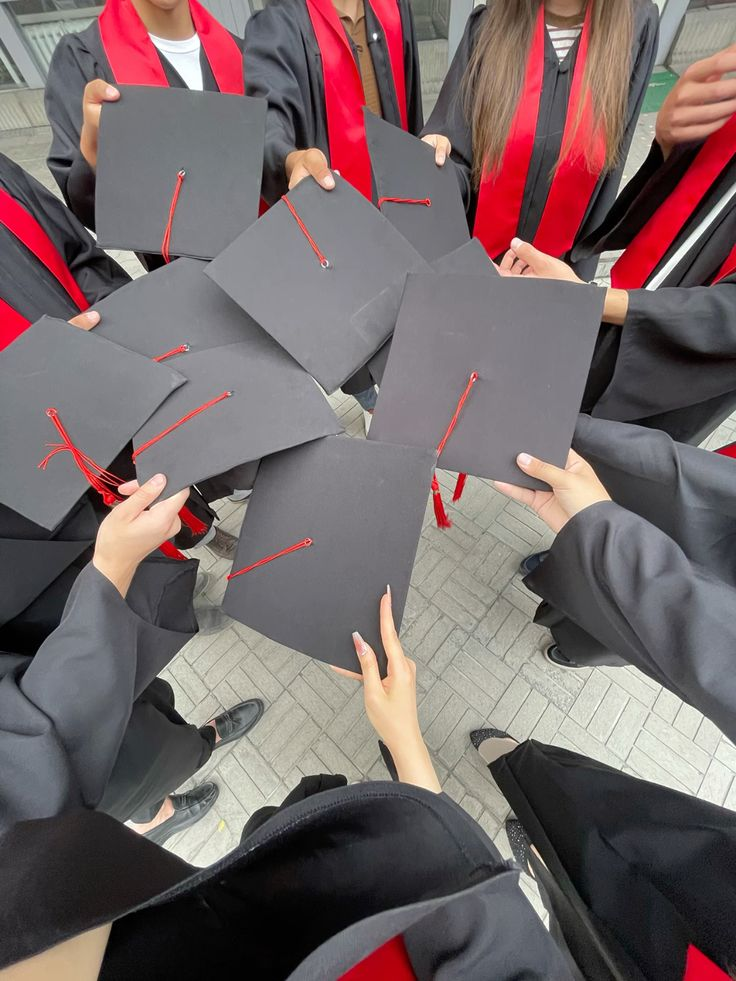

Graduating Into Uncertainty: The Fear Behind Every Degree
Name:Salaudeen Anifat Omolara
Matric No:230910415
Course-Code:MCM 302
Course-Title:Online Journalism
Name:Salaudeen Anifat Omolara
Matric No:230910415
Course-Code:MCM 302
Course-Title:Online Journalism

Graduating from University is a significant achievement, but often comes with fear and uncertainty. Many students worry about what comes after school, including job opportunities, career direction, and finacial Stability. Despite years of studying, the transition from student life to the real world can be challenging. This project examines the fears every degree and why many graduates feel unprepared for life after school.
Graduation is often seen as a celebration, but for many students, it brings fear and uncertainty. The question “what next?” becomes louder than the applause.Many graduates expects jobs shortly after school,but the reality is different.
| EXPECTATIONS BEFORE GRADUATION | REALITY AFTER GRADUATION |
|---|---|
| Immediate Job Offers | Long Job Search Period |
| Financial Independence | financial Struggle |
| Clear Career path | Confusion and Delays |
| Smooth Transition | Stress and Uncertainty |

The Chart shows that employment is the biggest fear among graduates, followed by lack of experience and high competition in the job market.
The audio captures real-life experiences of graduates after school.
In conclusion, graduating from university is both a moment of joy and a period of uncertainty. Many students face fear due to unemploymen, lack of experience, amnd unclear career paths. Providing support,career guidance,and skill development opportunities can help graduate overcome these challenges and build a better future.